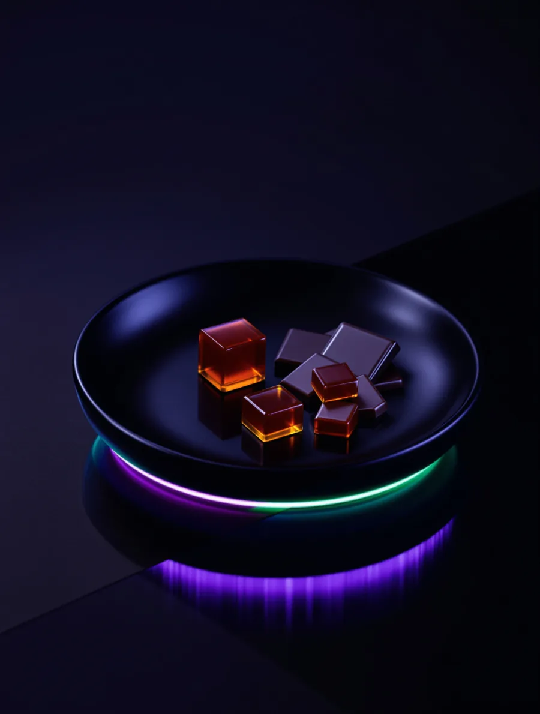

The Short Answer
What Do I Need for My First Dispensary Visit in NYC?
To visit a licensed New York dispensary you need just two things: a valid government-issued photo ID showing you are 21 or older, and a way to pay (cash or debit). No medical card, prescription, appointment, online order, or New York residency is required.
- 21+ Photo ID
- Cash / Debit
Take N' Toke is walk-in only at 994 Atlantic Avenue, Brooklyn, open daily 10:00 AM to 10:00 PM. Browse the live menu online, then shop in person.
At a Glance
What to Bring and What to Expect
| What to Bring | Why It Matters |
|---|---|
| Valid photo ID (21+) | Required by law and checked at the door every visit. Driver's license, state ID, U.S. or foreign passport, or military ID all work. |
| Cash or debit card | Credit cards are generally not accepted at NY dispensaries. An ATM is usually on-site if you need one. |
| No medical card needed | Adult-use purchases require no prescription, certification, or referral. Any adult 21+ can buy. |
| No appointment, just walk in | Take N' Toke is walk-in only, open 10:00 AM to 10:00 PM daily. No online ordering, reservations, or delivery. |
| A few questions in mind | Budtenders expect first-timers. Knowing roughly what you want (calm, social, sleep) helps them point you in the right direction. |
| About 10 to 20 minutes | That covers ID check, browsing, talking to staff, and checkout. There is no rush and no pressure to buy. |
New to all of this? Start with our first-time visitors guide for the full walkthrough, then preview the product menu before you head to 994 Atlantic Avenue.
5 Steps
How to Visit a Dispensary in NYC: 5 Steps
The quick version of your first visit, start to finish. Each step is short, and a budtender handles the rest once you walk in.
Bring a 21+ ID
Carry a valid government-issued photo ID, a state driver's license or non-driver ID, a U.S. or foreign passport, or a military ID. Staff check it at the door every visit, which takes about thirty seconds.
Browse the menu
Walk the sales floor and read the clearly labeled displays, or preview the live menu online before you arrive. Every product shows its name, THC/CBD percentages, weight, and the licensed producer.
Ask a budtender
Tell the staff what you're after in plain words (“something mild,” “calm but clear-headed”). Budtenders help first-timers every day, questions are the point.
Pay with cash or debit
Check out at the counter. Most NY dispensaries cannot take credit cards due to federal banking rules; an ATM is usually on-site. You will get your items in a sealed, child-resistant exit bag.
Consume only in private
Under New York Office of Cannabis Management (OCM) rules, cannabis use is allowed only in private residences, never on sidewalks, in parks, in your car, or in public. Keep everything out of reach of children and pets, and don't drive after consuming.
New to all of this? Start with our first-time visitors guide, then preview the product menu before you head to 994 Atlantic Avenue.
Step Zero
What to Bring
You need one thing: a valid photo ID proving you are 21 or older. New York dispensaries are required by law to check every customer, every time. Do not take it personally.
Accepted ID Types
- State-issued driver's license, from any U.S. state, not just New York
- State-issued non-driver ID, the standard identification card from any state
- U.S. passport or passport card, must not be expired
- Military ID, active duty or veteran cards accepted
- Foreign passport, tourists and visitors are welcome to purchase cannabis in New York
No residency requirement exists. You do not need to live in New York to buy cannabis here. Visitors from other states and countries can purchase the same products at the same limits.
Beyond your ID, bring cash or a debit card. Many dispensaries accept both, but some are cash-only due to banking restrictions in the cannabis industry. An ATM is typically available on-site. No medical card, referral, or appointment is needed.
The Experience
Walking In the Door
A licensed dispensary does not look like what you might expect. Forget any stereotype. Most NYC dispensaries are clean, well-lit retail spaces that feel closer to an Apple Store than a head shop. Here is what you will typically see:
Check-In Area
A staff member or security guard will greet you and verify your ID. This takes about thirty seconds. Some locations scan IDs digitally, others check them visually. Your information is not stored or shared.
Sales Floor
Products are displayed in cases or on shelves with clear labels. Budtenders (the staff who help you choose products) are stationed throughout. You can browse at your own pace or ask for help immediately.
Product Displays
Every product includes its name, THC and CBD percentages, terpene profiles, net weight, and the licensed producer. Some dispensaries also provide scent jars so you can smell flower before buying.
Checkout Counter
Once you have chosen your products, you pay at the counter. You will receive your items in a sealed, child-resistant exit bag as required by New York regulations.
4 Steps
The Buying Process
Buying cannabis at a dispensary is straightforward. The entire process usually takes ten to twenty minutes, including browsing time.
Show Your ID
Hand your valid photo ID to the greeter at the entrance. They confirm you are 21 or older and wave you through. That is the only barrier to entry.
Browse or Ask for Help
Look around at the product displays, read the labels, or go straight to a budtender and describe what you are looking for. You can say something as simple as 'I have never done this before and I want something mild.' They hear that every day.
Choose Your Products
The budtender will recommend options based on what you told them. They will explain the differences, suggest a dose, and answer any questions. Take your time. There is no rush and no pressure to buy anything specific.
Pay and Go
Head to the register, pay with cash or debit, and receive your products in a sealed bag. Your receipt includes all product details. You are done. Walk out and enjoy your day.
Communication
What You Can Ask Staff
Budtenders are trained to help people at every experience level. Asking questions is not just okay, it is the point. Here are some things you can and should ask:
- “What do you recommend for a total beginner?”
- “I want to relax but not feel out of it. What should I try?”
- “What is the difference between these two strains?”
- “How much should I take the first time?”
- “Can you explain what the THC percentage means?”
- “What is the cheapest option that is still good quality?”
- “I had a bad experience with edibles once. What went wrong?”
Products
Product Types for First-Timers
You do not need to understand every product on the shelf. Here are the five categories most accessible to new consumers.
Flower
Dried cannabis buds that you smoke. This is the most traditional form. Effects come on within minutes, last two to four hours, and are easy to dose because you can take one small puff and wait. Requires a pipe, papers, or a bong. If you do not own any accessories, ask the budtender about pre-rolls instead.
Pre-Rolls
Joints that are already rolled and ready to smoke. No accessories needed beyond a lighter. Take one or two puffs, put it out, and save the rest for later. This is one of the simplest ways to try cannabis for the first time because there is nothing to prepare.
Edibles
Cannabis-infused food products like gummies, chocolates, and mints. No smoking required. The tradeoff is that edibles take 30 minutes to 2 hours to kick in and last much longer (4 to 8 hours). For first-timers, start with 2.5 to 5 milligrams of THC. Do not take more until you have waited at least two hours.
Vapes
Cartridges or disposable pens that heat cannabis oil into vapor. Less smell than smoking, effects come on quickly, and dosing is easy with small puffs. Disposable pens require no setup. Cartridges need a compatible battery (available at most dispensaries).
Dosing
Dosing for Beginners: Start Low, Go Slow
The single most important rule in cannabis is to start with a low dose and increase gradually. Your body has never processed THC before (or has not in a long time), so your sensitivity is high. That is a good thing. It means a small amount goes a long way.
Smoking or Vaping
Take one small puff. Wait ten to fifteen minutes. If you feel comfortable and want more, take one more puff. Effects peak within thirty minutes and fade over two to four hours.
Edibles
Start with 2.5 milligrams of THC. Wait a full two hours before considering more. Edibles can take much longer to kick in than you expect. The most common beginner mistake is eating more because you think it is not working.
You can always take more. You cannot take less. This is not a race. Find the dose that feels right for you over several sessions.
Effects
What Cannabis Effects Feel Like
Everyone experiences cannabis differently, but most effects fall into three general categories. The specific product, dose, and your own body chemistry all play a role.
Relaxing
A sense of calm that settles into your body. Muscles loosen, tension drops, and your mind slows down. Often described as “melting into the couch.” Common with indica-leaning strains and products high in myrcene.
Energetic
A light, uplifted feeling. Conversations feel more engaging, creative ideas flow easier, and you may feel more sociable. Common with sativa-leaning strains and products high in limonene or terpinolene.
Balanced
A blend of relaxation and mild uplift. You feel present and comfortable without being sedated or wired. Many hybrid strains aim for this middle ground. A good starting point for most beginners.
NYC Law
NYC-Specific Information
New York State legalized recreational cannabis on March 31, 2021 through the Marijuana Regulation and Taxation Act (MRTA). Here is what that means for you as a consumer in New York City.
- Age requirement: You must be 21 years or older. No exceptions.
- Where to consume: Private residences only. You cannot legally consume cannabis in public spaces, parks, sidewalks, bars, or restaurants.
- Purchase limits: Adults can purchase up to two ounces of flower or the equivalent in other product types per transaction.
- Testing required: Every product sold at a licensed dispensary has been lab-tested for potency, pesticides, heavy metals, and microbial contamination.
- Licensed dispensaries only: Only buy from dispensaries licensed by the New York Office of Cannabis Management (OCM). Unlicensed shops are illegal and their products are not tested.
Real Talk
Common Worries Addressed
Most first-time visitors share the same concerns. Every single one is valid, and every single one has a straightforward answer.
“I am going to look stupid.”
You will not. Budtenders help first-timers every single day. It is literally their job. Nobody in the store is judging you. Everyone who works in a dispensary was also new to cannabis at some point.
“What if I do not like it?”
That is completely fine. Cannabis is not for everyone, and there is no obligation to become a regular consumer. If your first experience is underwhelming or uncomfortable, it may just mean you need a different product, a different dose, or a different setting.
“What if I take too much?”
If you follow the start-low-go-slow approach, this is unlikely. But if it happens: you are going to be fine. Nobody has ever died from a cannabis overdose. Find a comfortable spot, drink water, eat something, and wait. The feeling will pass, usually within an hour or two. Having a trusted friend nearby your first time is always a good idea.
“What if I freak out?”
Anxiety from cannabis is usually a result of taking too much, being in an uncomfortable environment, or not being prepared for the effects. Minimize this by starting with a very low dose, being in a safe and comfortable place, and knowing in advance that the effects are temporary. Deep breathing helps. So does watching something familiar and comforting on TV.
After Purchase
After You Buy It
- Store it properly: Keep flower in an airtight container away from light and heat. Edibles should be stored according to their packaging instructions, often in a cool dry place.
- Consume at home: New York law requires cannabis consumption in private residences. Do not use it on the street, in a park, or in your car.
- Have your first session with a friend: Having someone you trust nearby, especially someone with experience, makes the first time more comfortable and safer.
- Keep snacks and water nearby: Cannabis commonly increases appetite and can cause dry mouth. Having snacks and a drink ready is practical, not a cliche.
- Do not drive: Cannabis impairs coordination and reaction time. Plan your transportation in advance. Do not drive for several hours after consuming.
- Keep it away from children and pets: Store all products in child-resistant containers and out of reach. Edibles can look like regular candy.
FAQ
First-Time Visit FAQ
What do I need for my first dispensary visit in NYC?
Bring a valid government-issued photo ID proving you are 21 or older and a method of payment (cash or debit). No medical card, prescription, appointment, or New York residency is required. Take N' Toke is walk-in only, so you can come straight to 994 Atlantic Avenue during open hours and browse in person.
How old do you have to be to enter a dispensary in New York?
You must be 21 years of age or older to enter a licensed New York dispensary, and staff are required by law to check ID for every customer on every visit. Anyone under 21 cannot enter the sales floor, even with an adult. Accepted IDs include a state driver's license, state non-driver ID, U.S. or foreign passport, or military ID.
Can I pay with a credit card at a NYC dispensary?
Most New York dispensaries do not accept credit cards because of federal banking restrictions on cannabis. Plan to pay with cash or a debit card. An ATM is typically available on-site if you need it. Take N' Toke accepts cash and debit.
Do I need an appointment or to order online before visiting?
No. Take N' Toke is a walk-in dispensary with no online ordering, reservations, or delivery. Simply walk in during open hours, 10:00 AM to 10:00 PM daily, show your ID at the door, and a budtender will help you browse the menu in person.
What happens during a first dispensary visit?
A greeter checks your ID at the door, which takes about thirty seconds. You then browse the sales floor, where products are clearly labeled, or ask a budtender for guidance. Once you choose your items, you pay at the counter and receive them in a sealed, child-resistant exit bag. The whole visit usually takes ten to twenty minutes.
Can I smoke or use what I buy right outside the dispensary?
No. New York law permits cannabis consumption only in private residences. You cannot legally consume on sidewalks, in parks, in your car, or in any public space. Take your purchase home, and keep it out of reach of children and pets.
How long does a first dispensary visit take?
Most first visits take about 10 to 20 minutes, including the quick ID check at the door, browsing the menu, talking with a budtender, and checking out. There is no rush and no pressure to buy anything specific.
Continue Learning
Cannabis Strains Guide
Understand indica, sativa, terpenes, and how to choose a strain.
Open
AI illustrationEdibles Dosing Guide
Dosing tiers, onset times, and what to do if you take too much.
Open
NY Cannabis Laws
What is legal for adults 21+ in New York State.
OpenRelated
Keep Exploring
 AI illustration
AI illustrationFirst-Time Dispensary Visit
What to bring and what to expect at the counter.
OpenNew York Cannabis Laws
What adults 21+ can legally buy, carry, and where you can consume.
OpenShop the Live Menu
Browse Take N' Toke's full in-stock menu, then shop in person at 994 Atlantic Ave.
OpenVisit / Directions
Hours, parking, transit, and directions to our Prospect Heights store.
OpenReady to Visit?
Our budtenders are here to make your first experience great. Browse our product menu before you visit or just walk in and say hello.